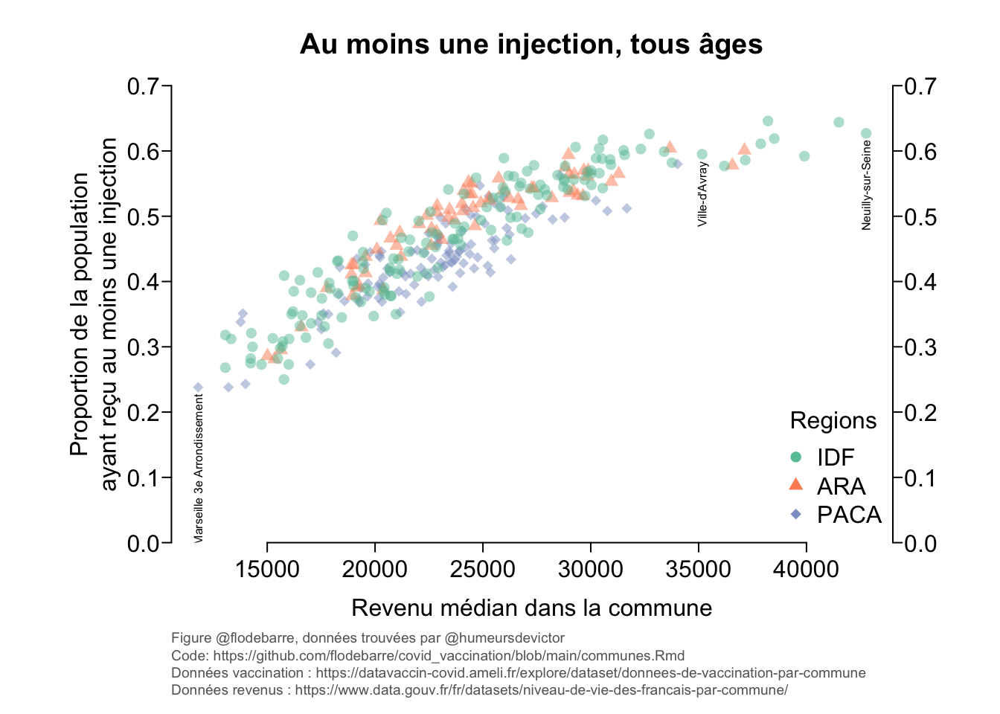
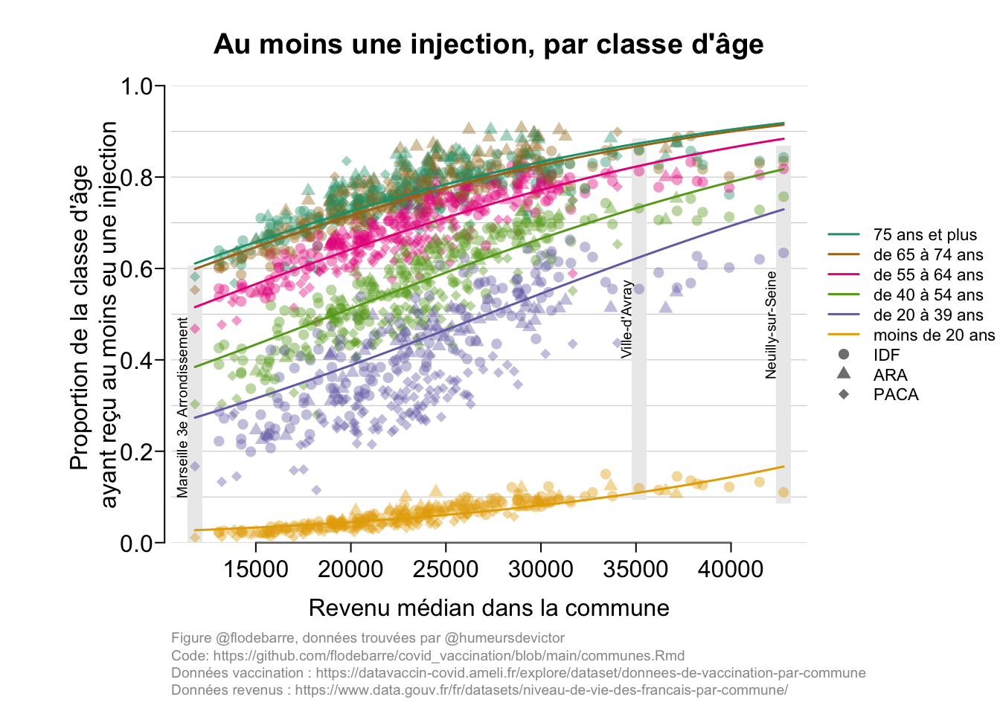
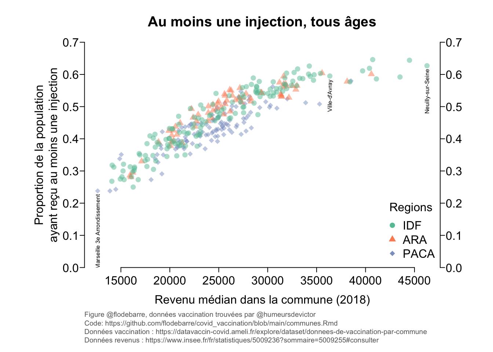

Niveau de vie par commune
Source : https://www.data.gouv.fr/fr/datasets/niveau-de-vie-des-francais-par-commune/
L’Insee a publié les niveaux de vie des ménages par commune pour l’année 2014. Le dispositif d’analyse, appelé Filosofi, permet de détailler où se situent les zones de pauvreté en France. Date de mise à jour : 31 octobre 2017
URL <- "https://www.data.gouv.fr/fr/datasets/r/16fce6ae-1907-442d-99b2-9ddcf6c41b03"
dataFile <- paste0("data/niveauVie.csv") # name file with today's date
download.file(URL, dataFile) # download file from repo
dat.niveauVie <- read.csv(dataFile, sep = ";", stringsAsFactors = FALSE, dec = ",")
head(dat.niveauVie)Vaccination par commune
URL <- "https://datavaccin-covid.ameli.fr/explore/dataset/donnees-de-vaccination-par-commune/download/?format=csv&timezone=Europe/Berlin&lang=fr&use_labels_for_header=true&csv_separator=%3B"
dataFile <- paste0("data/vacciCommunes.csv") # name file with today's date
download.file(URL, dataFile) # download file from repo
dat.vaccin <- read.csv(dataFile, sep = ";", stringsAsFactors = FALSE, dec = ",")
head(dat.vaccin)# Final week in the data
maxWeek <- max(unique(dat.vaccin$semaine_injection))
# Select only data for the final week
dat.vaccin.final <- dat.vaccin[which(dat.vaccin$semaine_injection == maxWeek), ]Merge the two datasets
nrow(dat.vaccin.final)
names(dat.niveauVie)
names(dat.niveauVie) <- c("commune_residence", "libelle_commune", "med14")
nrow(dat.niveauVie)
dat.all <- merge(dat.niveauVie, dat.vaccin.final, by = "commune_residence")
nrow(dat.all)Add region information
dat.all$dep <- substr(dat.all$commune_residence, start = 1, stop = 2)
unique(dat.all$dep)
# Initialize region data
dat.all$region <- NA
# Get region from departement information
dat.all[base::is.element(dat.all$dep, c("13", "83", "84")), "region"] <- "PACA"
dat.all[base::is.element(dat.all$dep, c("75", "91", "92", "93", "94", "95")), "region"] <- "IDF"
dat.all[base::is.element(dat.all$dep, c("69")), "region"] <- "ARA"Remove NAs
dat <- dat.all[which(!is.na(dat.all$effectif_cumu_1_inj) & !is.na(dat.all$effectif_cumu_termine) & !is.na(dat.all$population_carto)), ]
nrow(dat)Dictionary of age classes
dic.ages <- as.character(unique(dat$classe_age))
names(dic.ages) <- unique(dat$libelle_classe_age)
dic.ageslibrary(RColorBrewer)Region colors and pch
colRegion <- brewer.pal(name = "Set2", n = 3)
names(colRegion) <- c("IDF", "ARA", "PACA")
pchRegion <- 16:18
names(pchRegion) <- names(colRegion)Age colors
ages <- unique(dat$libelle_classe_age)
colAge <- brewer.pal(name = "Dark2", n = length(ages))
names(colAge) <- agesmdl1D <- glm(formula = cbind(effectif_cumu_1_inj, population_carto - effectif_cumu_1_inj) ~ med14 + classe_age + classe_age*med14 + region, data = dat, family = binomial(link = "logit"))
mdl1D.noregion <- glm(formula = cbind(effectif_cumu_1_inj, population_carto - effectif_cumu_1_inj) ~ med14 + classe_age, data = dat, family = binomial(link = "logit"))
mdlFin <- glm(formula = cbind(effectif_cumu_termine, population_carto - effectif_cumu_termine) ~ med14 + classe_age + classe_age*med14 + region, data = dat, family = binomial(link = "logit"))
mdlFin.noregion <- glm(formula = cbind(effectif_cumu_termine, population_carto - effectif_cumu_termine) ~ med14 + classe_age, data = dat, family = binomial(link = "logit"))
summary(mdl1D)##
## Call:
## glm(formula = cbind(effectif_cumu_1_inj, population_carto - effectif_cumu_1_inj) ~
## med14 + classe_age + classe_age * med14 + region, family = binomial(link = "logit"),
## data = dat)
##
## Deviance Residuals:
## Min 1Q Median 3Q Max
## -59.953 -3.624 0.085 2.894 73.420
##
## Coefficients:
## Estimate Std. Error z value Pr(>|z|)
## (Intercept) -4.459e+00 1.127e-02 -395.808 < 2e-16 ***
## med14 7.166e-05 4.415e-07 162.318 < 2e-16 ***
## classe_age20-39 2.539e+00 1.233e-02 205.936 < 2e-16 ***
## classe_age40-54 3.239e+00 1.270e-02 254.975 < 2e-16 ***
## classe_age55-64 4.074e+00 1.386e-02 293.838 < 2e-16 ***
## classe_age65-74 4.578e+00 1.505e-02 304.111 < 2e-16 ***
## classe_age75 et + 4.739e+00 1.525e-02 310.691 < 2e-16 ***
## classe_ageTOUT_AGE 3.019e+00 1.152e-02 262.105 < 2e-16 ***
## regionIDF -4.928e-02 1.439e-03 -34.242 < 2e-16 ***
## regionPACA -2.191e-01 1.717e-03 -127.585 < 2e-16 ***
## med14:classe_age20-39 3.470e-06 4.917e-07 7.056 1.71e-12 ***
## med14:classe_age40-54 -4.721e-06 5.114e-07 -9.231 < 2e-16 ***
## med14:classe_age55-64 -1.818e-05 5.677e-07 -32.019 < 2e-16 ***
## med14:classe_age65-74 -2.546e-05 6.220e-07 -40.930 < 2e-16 ***
## med14:classe_age75 et + -2.995e-05 6.238e-07 -48.015 < 2e-16 ***
## med14:classe_ageTOUT_AGE -1.244e-05 4.549e-07 -27.342 < 2e-16 ***
## ---
## Signif. codes: 0 '***' 0.001 '**' 0.01 '*' 0.05 '.' 0.1 ' ' 1
##
## (Dispersion parameter for binomial family taken to be 1)
##
## Null deviance: 3590876 on 2199 degrees of freedom
## Residual deviance: 170608 on 2184 degrees of freedom
## AIC: 188781
##
## Number of Fisher Scoring iterations: 4summary(mdlFin)##
## Call:
## glm(formula = cbind(effectif_cumu_termine, population_carto -
## effectif_cumu_termine) ~ med14 + classe_age + classe_age *
## med14 + region, family = binomial(link = "logit"), data = dat)
##
## Deviance Residuals:
## Min 1Q Median 3Q Max
## -42.917 -2.950 -0.187 2.296 51.658
##
## Coefficients:
## Estimate Std. Error z value Pr(>|z|)
## (Intercept) -6.158e+00 2.336e-02 -263.615 < 2e-16 ***
## med14 7.269e-05 9.040e-07 80.414 < 2e-16 ***
## classe_age20-39 3.382e+00 2.411e-02 140.252 < 2e-16 ***
## classe_age40-54 4.117e+00 2.411e-02 170.749 < 2e-16 ***
## classe_age55-64 5.097e+00 2.449e-02 208.116 < 2e-16 ***
## classe_age65-74 5.620e+00 2.504e-02 224.417 < 2e-16 ***
## classe_age75 et + 5.919e+00 2.523e-02 234.625 < 2e-16 ***
## classe_ageTOUT_AGE 4.120e+00 2.349e-02 175.379 < 2e-16 ***
## regionIDF -5.683e-03 1.587e-03 -3.581 0.000342 ***
## regionPACA 7.114e-02 1.879e-03 37.862 < 2e-16 ***
## med14:classe_age20-39 -1.677e-05 9.370e-07 -17.894 < 2e-16 ***
## med14:classe_age40-54 -1.791e-05 9.386e-07 -19.084 < 2e-16 ***
## med14:classe_age55-64 -2.460e-05 9.581e-07 -25.673 < 2e-16 ***
## med14:classe_age65-74 -2.226e-05 9.855e-07 -22.590 < 2e-16 ***
## med14:classe_age75 et + -2.605e-05 9.912e-07 -26.277 < 2e-16 ***
## med14:classe_ageTOUT_AGE -2.150e-05 9.109e-07 -23.605 < 2e-16 ***
## ---
## Signif. codes: 0 '***' 0.001 '**' 0.01 '*' 0.05 '.' 0.1 ' ' 1
##
## (Dispersion parameter for binomial family taken to be 1)
##
## Null deviance: 3297582 on 2199 degrees of freedom
## Residual deviance: 93538 on 2184 degrees of freedom
## AIC: 111223
##
## Number of Fisher Scoring iterations: 4# Fitnewdata <- expand.grid(med14 = seq(min(dat$med14), max(dat$med14), length.out = 100), classe_age = sort(unique(dat$classe_age)), region = unique(dat$region))
nrow(newdata)
newdata.noregion <- expand.grid(med14 = seq(min(dat$med14), max(dat$med14), length.out = 100), classe_age = sort(unique(dat$classe_age)))
ndt <- newdata
ndt$prd1D <- predict(mdl1D, newdata = newdata, type = "response")
ndt$prdFin <- predict(mdlFin, newdata = newdata, type = "response")
ndt.noregion <- newdata.noregion
ndt.noregion$prd1D <- predict(mdl1D.noregion, newdata = newdata.noregion, type = "response")
ndt.noregion$prdFin <- predict(mdlFin.noregion, newdata = newdata.noregion, type = "response")marWithDetails <- c(6, 6, 3, 6.75)
textDetails <- "Figure @flodebarre, données trouvées par @humeursdevictor
Code: https://github.com/flodebarre/covid_vaccination/blob/main/communes.Rmd
Données vaccination : https://datavaccin-covid.ameli.fr/explore/dataset/donnees-de-vaccination-par-commune
Données revenus : https://www.data.gouv.fr/fr/datasets/niveau-de-vie-des-francais-par-commune/"cla <- "Tout âge"
par(mar = marWithDetails - c(0, 0, 0, 3), las = 1, mgp = c(1.75, 0.4, 0), tck = -0.02)
subdat <- dat[which(dat$libelle_classe_age == cla), ]
plot(subdat$med14, subdat$taux_cumu_1_inj,
ylim = c(0, 0.7),
xlab = "Revenu médian dans la commune", ylab = "Proportion de la population
ayant reçu au moins une infection",
yaxs = "i",
col = adjustcolor(colRegion[subdat$region], alpha.f = 0.5),
pch = pchRegion[subdat$region],
frame.plot = FALSE)
axis(4)
title(main = "Au moins une injection, tous âges")
mtext(textDetails, side = 1, line = 4.5, cex = 0.6, adj = 0, col = gray(0.4))
legend("bottomright", legend = names(colRegion), col = colRegion, pch = pchRegion[names(colRegion)], bty = "n", title = "Regions")
# Add legends
x1 <- max(dat$med14)
d1 <- dat[which(dat$med14 == x1), ]
x2 <- min(dat$med14)
d2 <- dat[which(dat$med14 == x2), ]
x3 <- 35161
d3 <- dat[which(dat$med14 == x3), ]
dy <- 0.01
text(x = c(x1, x2, x3),
y = c(as.numeric(d1[d1$classe_age == "TOUT_AGE", "taux_cumu_1_inj"]), as.numeric(d2[d2$classe_age == "TOUT_AGE", "taux_cumu_1_inj"]), as.numeric(d3[d3$classe_age == "TOUT_AGE", "taux_cumu_1_inj"])) - dy,
labels = c(d1[1, "libelle_commune.x"], d2[1, "libelle_commune.x"], d3[1, "libelle_commune.x"]),
adj = c(1, 0.5), srt = 90, cex = 0.5)
(Pour faire les choses proprement il faudrait une boucle)
par(mar = marWithDetails, las = 1, mgp = c(1.75, 0.4, 0), tck = -0.02)
alf <- 0.4
lwd.pred <- 1.5
# Remove all ages
tmp <- dat[which(dat$classe_age != "TOUT_AGE"),]
plot(tmp$med14, tmp$taux_cumu_1_inj,
xlab = "Revenu médian dans la commune", ylab = "Proportion de la classe d'âge
ayant reçu au moins eu une injection",
yaxs = "i", frame.plot = FALSE, ylim = c(0, 1),
type = "n", axes = FALSE
)
axis(1)
axis(2, pos = 10200)
par(xpd = FALSE)
title(main = "Au moins une injection, par classe d'âge")
for(i in seq(0, 1, by = 0.1)){
abline(h = i, lwd = 0.5, col = gray(0.8))
}
# Legend communes
dx <- 400
dy <- 0.025
cexleg <- 0.6
colRec <- gray(0.925)
# max
xmax <- max(dat$med14)
datmax <- dat[which(dat$med14 == xmax), ]
rect(xleft = xmax - dx, xright = xmax + dx,
ybottom = as.numeric(min(datmax$taux_cumu_1_inj)) - dy, ytop = as.numeric(max(datmax$taux_cumu_1_inj)) + dy, col = colRec, border = gray(0, 0))
text(x = xmax - dx, y = (as.numeric(max(datmax$taux_cumu_1_inj)) + as.numeric(min(datmax$taux_cumu_1_inj)) )/2, labels = datmax[1, "libelle_commune.x"], cex = cexleg, adj = c(0.5, 0), srt = 90)
# min
xmin <- min(dat$med14)
datmin <- dat[which(dat$med14 == xmin), ]
rect(xleft = xmin - dx, xright = xmin + dx,
ybottom = as.numeric(min(datmin$taux_cumu_1_inj)) - dy, ytop = as.numeric(max(datmin$taux_cumu_1_inj)) + dy, col = colRec, border = gray(0, 0))
text(x = xmin - dx, y = (as.numeric(max(datmin$taux_cumu_1_inj)) + as.numeric(min(datmin$taux_cumu_1_inj)) )/2, labels = datmin[1, "libelle_commune.x"], cex = cexleg, adj = c(0.5, 0), srt = 90)
# Intermediate
dat3 <- dat[dat$med14>35000 & dat$med14 < 36000,]
x3 <- unique(dat3$med14)
rect(xleft = x3 - dx, xright = x3 + dx,
ybottom = as.numeric(min(dat3$taux_cumu_1_inj)) - dy, ytop = as.numeric(max(dat3$taux_cumu_1_inj)) + dy, col = colRec, border = gray(0, 0))
text(x = x3 - dx, y = (as.numeric(max(dat3$taux_cumu_1_inj)) + as.numeric(min(dat3$taux_cumu_1_inj)) )/2, labels = dat3[1, "libelle_commune.x"], cex = cexleg, adj = c(0.5, 0), srt = 90)
mtext(1, line = 4.5, text = textDetails, cex = 0.6, adj = 0, col = gray(0.6))
par(xpd = TRUE)
points(tmp$med14, tmp$taux_cumu_1_inj,
col = adjustcolor(colAge[tmp$libelle_classe_age], alpha.f = alf),
pch = pchRegion[tmp$region])
# Get age classes and sort them by proportion vaccinated for the legend
mns <- aggregate(as.numeric(dat$taux_cumu_termine), by = list(dat$libelle_classe_age), FUN = mean, na.rm = TRUE)
mns2 <- mns[sort(mns$x, index.return = TRUE, decreasing = TRUE)$ix,]
mns2 <- mns2[mns2$Group.1 != "Tout âge", ]
legend(x = 1.05*max(tmp$med14), y = 0.5,
legend = c(mns2$Group.1, names(pchRegion)),
col = c(colAge[mns2$Group.1], rep(gray(0.5), 3)),
pch = c(rep(NA, nrow(mns2)), pchRegion),
lwd = c(rep(lwd.pred, nrow(mns2)), rep(0, length(pchRegion))),
bty = "n", cex = 0.7, pt.cex = 1, xjust = 0, yjust = 0.5)
for(age in ages[ages!="Tout âge"]){
agcl <- dic.ages[age] # Get corresponding age class
# Get predicted data for this age class (no region)
subd <- ndt.noregion[ndt.noregion$classe_age == agcl,]
lines(subd$med14, subd$prd1D, col = colAge[age], lwd = lwd.pred)
}
par(mar = marWithDetails, las = 1, mgp = c(1.75, 0.4, 0), tck = -0.02)
plot(tmp$med14, tmp$taux_cumu_termine,
xlab = "Revenu médian dans la commune", ylab = "Proportion de la classe d'âge
dont la vaccination est terminée",
yaxs = "i", frame.plot = FALSE, ylim = c(0, 1),
type = "n", axes = FALSE
)
axis(1)
axis(2, pos = 10200)
par(xpd = FALSE)
title(main = "Vaccination terminée, par classe d'âge")
for(i in seq(0, 1, by = 0.1)){
abline(h = i, lwd = 0.5, col = gray(0.8))
}
# Legend communes
dx <- 400
dy <- 0.025
cexleg <- 0.6
colRec <- gray(0.925)
# max
xmax <- max(dat$med14)
datmax <- dat[which(dat$med14 == xmax), ]
rect(xleft = xmax - dx, xright = xmax + dx,
ybottom = as.numeric(min(datmax$taux_cumu_termine)) - dy, ytop = as.numeric(max(datmax$taux_cumu_termine)) + dy, col = colRec, border = gray(0, 0))
text(x = xmax - dx, y = (as.numeric(max(datmax$taux_cumu_termine)) + as.numeric(min(datmax$taux_cumu_termine)) )/2, labels = datmax[1, "libelle_commune.x"], cex = cexleg, adj = c(0.5, 0), srt = 90)
# min
xmin <- min(dat$med14)
datmin <- dat[which(dat$med14 == xmin), ]
rect(xleft = xmin - dx, xright = xmin + dx,
ybottom = as.numeric(min(datmin$taux_cumu_termine)) - dy, ytop = as.numeric(max(datmin$taux_cumu_termine)) + dy, col = colRec, border = gray(0, 0))
text(x = xmin - dx, y = (as.numeric(max(datmin$taux_cumu_termine)) + as.numeric(min(datmin$taux_cumu_termine)) )/2, labels = datmin[1, "libelle_commune.x"], cex = cexleg, adj = c(0.5, 0), srt = 90)
# Intermediate
dat3 <- dat[dat$med14>35000 & dat$med14 < 36000,]
x3 <- unique(dat3$med14)
rect(xleft = x3 - dx, xright = x3 + dx,
ybottom = as.numeric(min(dat3$taux_cumu_termine)) - dy, ytop = as.numeric(max(dat3$taux_cumu_termine)) + dy, col = colRec, border = gray(0, 0))
text(x = x3 - dx, y = (as.numeric(max(dat3$taux_cumu_termine)) + as.numeric(min(dat3$taux_cumu_termine)) )/2, labels = dat3[1, "libelle_commune.x"], cex = cexleg, adj = c(0.5, 0), srt = 90)
mtext(1, line = 4.5, text = textDetails, cex = 0.6, adj = 0, col = gray(0.6))
par(xpd = TRUE)
points(tmp$med14, tmp$taux_cumu_termine,
col = adjustcolor(colAge[tmp$libelle_classe_age], alpha.f = alf),
pch = pchRegion[tmp$region])
# Get age classes and sort them by proportion vaccinated for the legend
mns <- aggregate(as.numeric(dat$taux_cumu_termine), by = list(dat$libelle_classe_age), FUN = mean, na.rm = TRUE)
mns2 <- mns[sort(mns$x, index.return = TRUE, decreasing = TRUE)$ix,]
mns2 <- mns2[mns2$Group.1 != "Tout âge", ]
legend(x = 1.05*max(tmp$med14), y = 0.5,
legend = c(mns2$Group.1, names(pchRegion)),
col = c(colAge[mns2$Group.1], rep(gray(0.5), 3)),
pch = c(rep(NA, nrow(mns2)), pchRegion),
lwd = c(rep(lwd.pred, nrow(mns2)), rep(0, length(pchRegion))),
bty = "n", cex = 0.7, pt.cex = 1, xjust = 0, yjust = 0.5)
for(age in ages[ages!="Tout âge"]){
agcl <- dic.ages[age] # Get corresponding age class
# Get predicted data for this age class (no region)
subd <- ndt.noregion[ndt.noregion$classe_age == agcl,]
lines(subd$med14, subd$prdFin, col = colAge[age], lwd = lwd.pred)
}
# Extract departement
dat.vaccin$dep <- substr(dat.vaccin$commune_residence, start = 1, stop = 2)
# Add region
dat.vaccin$region <- NA
dat.vaccin[base::is.element(dat.vaccin$dep, c("13", "83", "84")), "region"] <- "PACA"
dat.vaccin[base::is.element(dat.vaccin$dep, c("75", "91", "92", "93", "94", "95")), "region"] <- "IDF"
dat.vaccin[base::is.element(dat.vaccin$dep, c("69")), "region"] <- "ARA"
dat.all.time <- merge(dat.niveauVie, dat.vaccin, by = "commune_residence")
nrow(dat.all.time)
dat.all.time$tx_cum_1d <- as.numeric(dat.all.time$taux_cumu_1_inj)
dat.all.time$tx_cum_fin <- as.numeric(dat.all.time$taux_cumu_termine)
# plot(as.Date(dat.all.time$date), dat.all.time$taux_cumu_1_inj)
# plot(as.Date(dat.all.time$date), dat.all.time$taux_cumu_termine)
dat.all.time$time <- as.numeric(as.Date(dat.all.time$date) - as.Date(min(dat.all.time$date)))
is.numeric(dat.all.time$time)
is.numeric(dat.all.time$taux_cumu_1_inj)
unique(dat.all.time$taux_cumu_1_inj)
dat$classe_age <- as.factor(dat$classe_age)
dat$region <- as.factor(dat$region)
mdl1D <- glm(formula = cbind(effectif_cumu_1_inj, population_carto - effectif_cumu_1_inj) ~ time + med14 + classe_age + med14*time + classe_age*time + region + region*time, data = dat, family = binomial(link = "logit"))
mdl1D.2 <- glm(formula = cbind(effectif_cumu_1_inj, population_carto - effectif_cumu_1_inj) ~ time + med14 + classe_age + med14*time + classe_age*time, data = dat, family = binomial(link = "logit"))
mdlFin <- glm(formula = cbind(effectif_cumu_termine, population_carto - effectif_cumu_termine) ~ time + med14 + classe_age + med14*time + classe_age*time + region + region*time, data = dat, family = binomial(link = "logit"))
mdlFin.2 <- glm(formula = cbind(effectif_cumu_termine, population_carto - effectif_cumu_termine) ~ time + med14 + classe_age + med14*time + classe_age*time, data = dat, family = binomial(link = "logit"))
summary(mdl1D)
summary(mdlFin)
length(predict(mdl))
prd <- predict(mdl1D, se.fit = TRUE)
dat$pred1D <- prd$fit
dat$se1D <- prd$se.fit
lgt <- function(x){ exp(x) / (1 + exp(x)) }
dat$pred1D.response <- lgt(dat$pred1D)
dat$pred1D.response.se.upper <- lgt(dat$pred1D + 1.96 * dat$se1D)
dat$pred1D.response.se.lower <- lgt(dat$pred1D - 1.96 * dat$se1D)
#with(preddat, lines(0:1000, exp(fit)/(1+exp(fit)), col="blue"))
#with(preddat, lines(0:1000, exp(fit+1.96*se.fit)/(1+exp(fit+1.96*se.fit)), lty=2))
#with(preddat, lines(0:1000, exp(fit-1.96*se.fit)/(1+exp(fit-1.96*se.fit)), lty=2))
newdata <- expand.grid(med14 = seq(min(dat$med14), max(dat$med14), length.out = 100), classe_age = sort(unique(dat$classe_age)), time = seq(min(dat$time), max(dat$time), length.out = 11))
nrow(newdata)
prd1D <- predict(mdl1D.2, newdata = newdata, type = "response")
prdFin <- predict(mdlFin.2, newdata = newdata, type = "response")
ifinal <- which(newdata$time == max(newdata$time))
ndt <- newdata[ifinal, ]
ndt$pred1D <- prd1D[ifinal]
ndt$predFin <- prdFin[ifinal]
unique(dat$classe_age)
unique(dat$libelle_classe_age)dat.final <- dat[which(dat$time == max(dat$time)),]
tmp <- dat.final[which(dat.final$classe_age != "TOUT_AGE"),]
plot(tmp$med14, tmp$taux_cumu_1_inj)
mns <- aggregate(as.numeric(dat.final$taux_cumu_termine), by = list(dat.final$libelle_classe_age), FUN = mean, na.rm = TRUE)
mns2 <- mns[sort(mns$x, index.return = TRUE, decreasing = TRUE)$ix,]
mns2 <- mns2[mns2$Group.1 != "Tout âge", ]
par(mar = c(4, 3, 2, 6), las = 1)
alf <- 0.5
plot(tmp$med14, tmp$taux_cumu_1_inj, col = adjustcolor(colAge[tmp$libelle_classe_age], alpha.f = alf),
xlab = xlb, ylab = "Proportion vaccination terminée", pch = 16, yaxs = "i", frame.plot = FALSE, ylim = c(0, 1))
par(xpd = TRUE)
legend(x = 1.03*max(tmp$med14), y = 1, legend = mns2$Group.1, col = adjustcolor(colAge[mns2$Group.1], alpha.f = alf), pch = 16, bty = "n", cex = 0.7, pt.cex = 1, xjust = 0)
for(age in ages[ages!="Tout âge"]){
agcl <- dic.ages[age]
subd <- ndt[ndt$classe_age == agcl,]
lines(subd$med14, subd$pred1D, col = colAge[age], lwd = 2)
}
tmp[1,]
prd1Dlang <- "EN"
if(lang == "EN"){
xlb <- "Median income"
ylb <- "Proportion 1st dose"
tt <- ""
detailsFig <- "Code: https://github.com/flodebarre/covid_vaccination/blob/main/communes.Rmd
Vaccination data: https://datavaccin-covid.ameli.fr/explore/dataset/donnees-de-vaccination-par-commune
Income data: https://www.data.gouv.fr/fr/datasets/niveau-de-vie-des-francais-par-commune/"
}else{
xlb <- "Revenu median"
ylb <- "Proportion 1ere dose"
tt <- ""
detailsFig <- "Code: https://github.com/flodebarre/covid_vaccination/blob/main/communes.Rmd
Données vaccination : https://datavaccin-covid.ameli.fr/explore/dataset/donnees-de-vaccination-par-commune
Données revenus : https://www.data.gouv.fr/fr/datasets/niveau-de-vie-des-francais-par-commune/"
}par(mar = c(5, 4, 3, 3), las = 1, mgp = c(1.75, 0.4, 0), tck = -0.02)
for(cla in unique(dat.all$libelle_classe_age)){
subdat <- dat.all[which(dat.all$libelle_classe_age == cla), ]
plot(subdat$med14, subdat$taux_cumu_1_inj,
ylim = c(0, 1),
xlab = "Revenu MED14", ylab = "Proportion 1ere injection",
yaxs = "i", pch = 16, col = adjustcolor(colRegion[subdat$region], alpha.f = 0.5), frame.plot = FALSE)
axis(4)
title(main = cla)
mtext("Code: https://github.com/flodebarre/covid_vaccination/blob/main/communes.Rmd
Données vaccination : https://datavaccin-covid.ameli.fr/explore/dataset/donnees-de-vaccination-par-commune
Données revenus : https://www.data.gouv.fr/fr/datasets/niveau-de-vie-des-francais-par-commune/", side = 1, line = 4, cex = 0.6, adj = 0, col = gray(0.4))
}#install.packages("plotly")
library(plotly)
#for(cla in unique(dat.all$libelle_classe_age)){
cla <- "Tout âge"
subdat <- dat.all[which(dat.all$libelle_classe_age == cla), ]
fig <- plot_ly(subdat, x = ~med14, y = ~taux_cumu_1_inj, type = 'scatter', mode = 'markers',
hoverinfo = 'text',
text = ~paste(commune_residence, libelle_commune.x)) %>% layout(yaxis = list(title = "Proportion 1ere injection"), xaxis = list(title = "Revenu median"))
fig
fig2 <- fig %>% layout(yaxis = list(range = c(0, 1000), title = "Proportion 1ere injection"))
fig2
readline(prompt="Press [enter] to continue")
}
fig